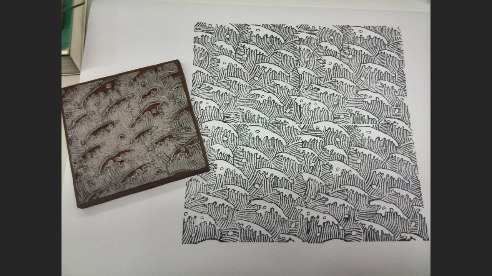
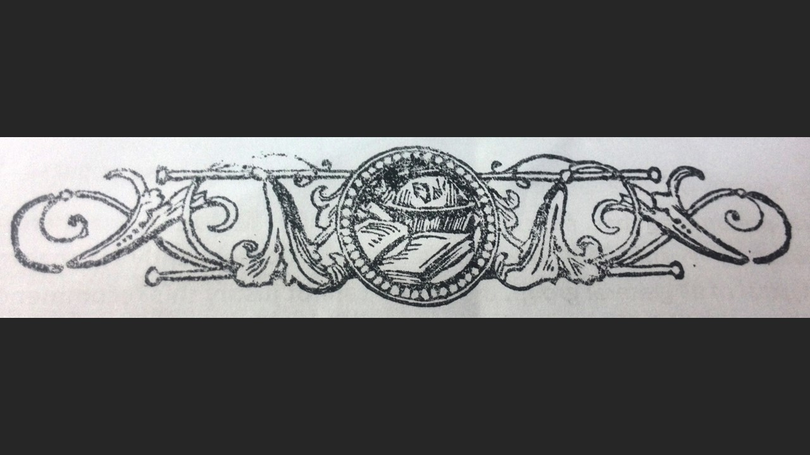
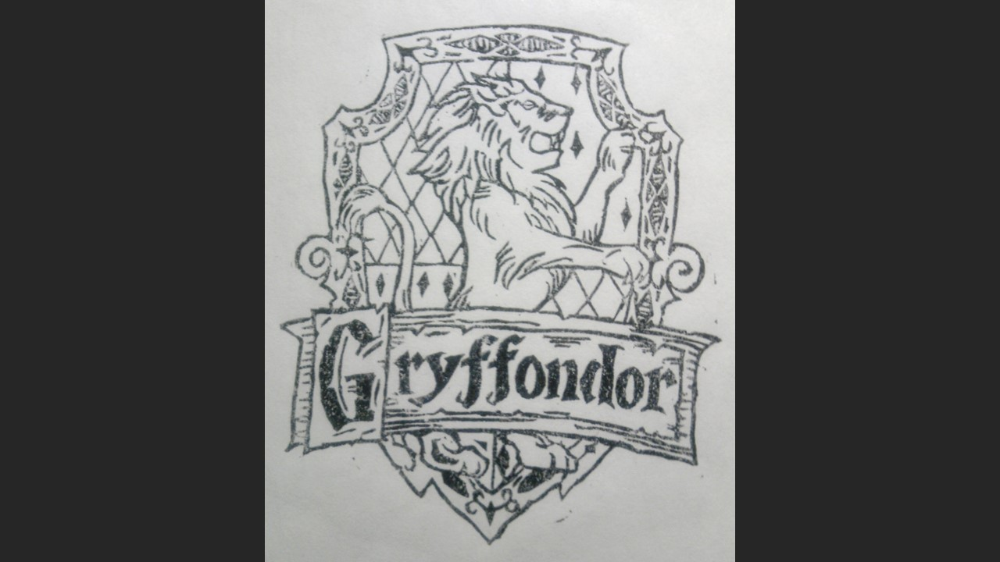
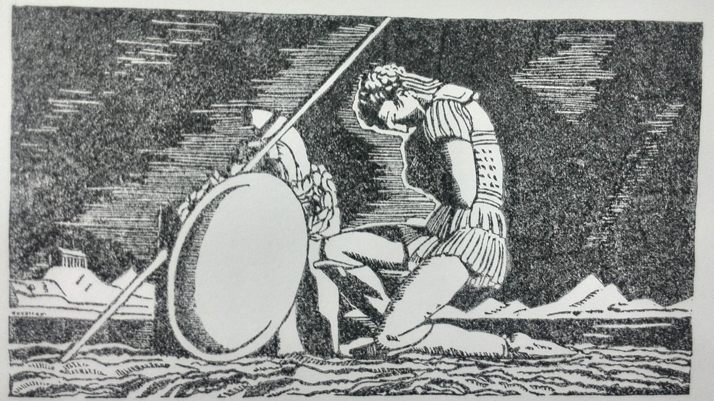
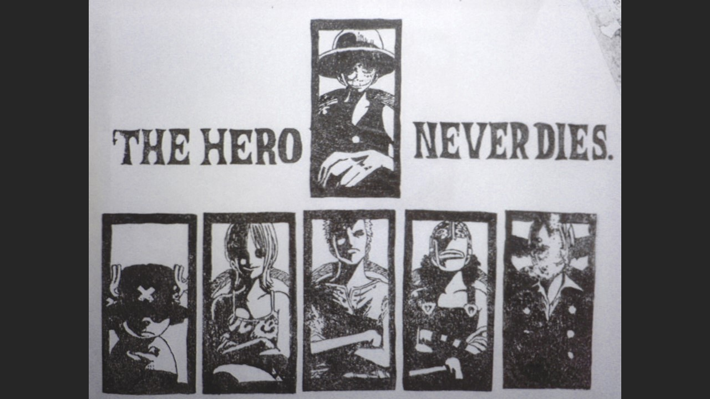

About Me
ResumeHi, I am Xuechen Li. I am currently a graduate student at the University of Texas at Austin. My focus is user experience and I am seeking opportunities to work as a UX designer or UX researcher.
I like arts and technology. Things on my checklist are:
Rubber stamp carving is my favorite. I found this hobby five years ago and it has become my best way to relax since then. I like to carve while listening to music, and the best part is that I can think a lot while carving.





‹
›